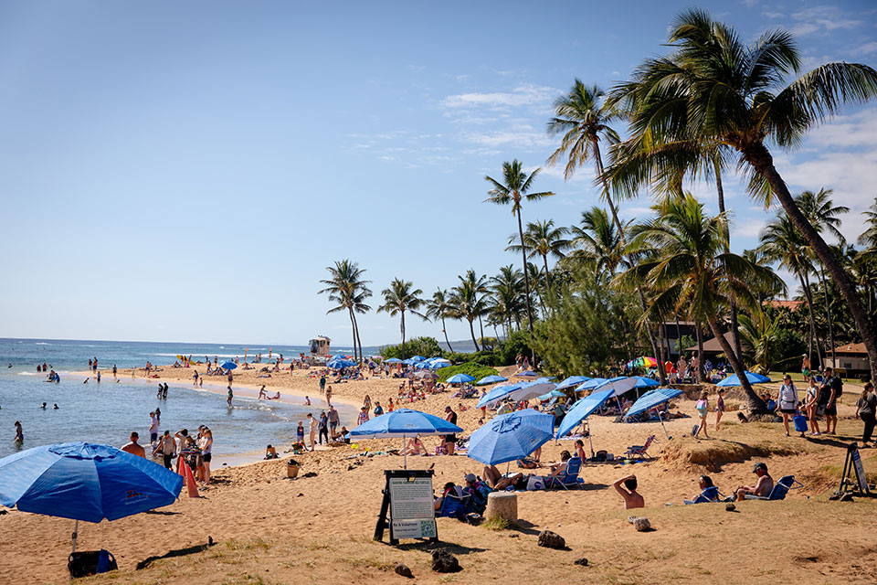

“산으로 갈까, 바다로 갈까?”에서 이제는 “국내에 있을까, 해외로 나갈까?”를 고민하는 사람들이 많아졌다. 제주도와 강릉도 여전히 인기지만, 해외 휴양지도 인기다. 국내 물가가 워낙 높은 탓에 한국에 있으나 외국으로 나가나 체감상 휴가 비용 차이가 크지 않다는 점도 한몫한다. 그런데 앞으로는 국내 여행의 가격 경쟁력이 확실히 더 높아질지도 모르겠다. 최근 들어 해외에서 휴가를 보낼 때 드는 비용이 눈에 띄게 늘어났기 때문이다. 해외에서 보내온 청구서에는 생소한 항목들이 가득하다. 입국세에 숙박세에, 환경보호세와 항공세까지. 거기에 기후여행자보험료도 내야 한다. 마치 해외에서의 여름 바캉스가 벌금 고지서로 돌아온 느낌이다. 이건 혹시 뜨거워진 지구의 ‘금융치료’...?
쉬러 왔는데 세금을 내라고요? - ‘기후세’ 걷는 여름 휴양지들
하와이, 몰디브, 발리, 바르셀로나, 산토리니, 베니스. 한국인뿐
아니라 세계인이 사랑하는 여름 휴가지다. 이들 지역의 공통점은
세계에서 제일가는 푸른 바다와 아름다운 해변, 빼어난 자연환경을
자랑한다는 점이다. 뭐든 좋은 것은 값이 나가는 법. 세상에 공짜
점심이 없듯이, 세상에 공짜 자연도 없다. 이제 이 지역들을
여행하려면 내가 즐긴 자연환경을 보전하는 데 필요한 비용을 나도
부담해야 한다.
얼마 전 하와이주 의회는 하와이를 방문하는 관광객들이 내던 숙박세를
11%로 인상하는 법안을 통과시켰다. 크루즈 이용객들도 내년 7월부터는
11%의 숙박세를 내야 한다. 세금은 선박이 항구에 정박하는 일수에
따라 부과한다. 숙박비가 하루 300달러라면 매일 33달러를 추가로 내야
하는 셈이다. 그게 다가 아니다. 각 카운티가 부과하는 별도의
숙박세와 소비세까지 합하면 휴가객이 내야 하는 세금은 거의 20%에
육박한다. 하와이에서 휴가를 보낼 거면 세금을 내라는 소리다. 매년
전 세계에서 천만 명이 찾는 세계적인 관광지임을 고려할 때, 이번
조치로 하와이가 거둬들일 추가 세수는 연간 약 1억 달러(약 1,400 억
원)에 이를 것으로 예상된다.

Poipu 해변, 하와이 카우아이 남쪽 해안의 인기 관광지
그러면 이 많은 돈은 어디에 사용될까? 하와이 주정부는 이를 지역의
기후 회복력을 강화하고, 자연환경을 보호하며, 지속가능한 관광을
촉진하는 데 사용한다는 계획이다. 하와이는 두 해 전 유례없는 대형
산불로 백여 명의 주민이 목숨을 잃는 사태를 경험했다. 그리고 태평양
한가운데 위치한 섬으로서 해수면 상승과 열대성 폭우의 위험에도
심각하게 노출되어 있다. 숙박세, 일명 ‘녹색 세금(green tax)’은 이런
문제를 해결하는데 매우 유용하다. 산불 위험을 줄이기 위해 불쏘시개
역할을 했던 침입성 식물을 제거하고, 자연경관 보전과 관광산업의
지속가능성을 위해 해수면 침식으로 유실된 해변의 모래를 보충하는 데
필요한 비용을 녹색 세금으로 충당할 수 있기 때문이다. 그래서
주정부는 녹색 세금을 “미래지향적인 메커니즘”이라고 소개한다.
스페인 바르셀로나, 몰디브, 인도네시아 발리, 그리스,
이탈리아 베니스도 지역의 기후 회복력을 강화하고 자연을 보호하기
위해 관광객으로부터 세금을 걷는다. 유럽의 대표적인 여름 휴가지인
바르셀로나에서 관광세는 관광객이 이용하는 숙박시설의 등급에 따라
다른데, 5성급 호텔에서 5일간 체류한다면 하루에 7유로씩 총
35유로(약 6만 원)를 내야 한다. 바르셀로나 시장의 말마따나,
하룻밤에 호텔비로 400유로씩 쓰는 이들에게 7유로쯤은 별거 아닐 수
있다. 게다가 그 돈이 초등학생들의 기후 대응을 위해 사용된다면
말이다. 시는 관광세로 1억 유로(약 1,600억 원)의 재원을 마련하여
시내 170개 공립 학교에 에어컨과 고효율 히트펌프, 태양광 발전기를
설치할 계획이다.
배우 이병헌의 대사 “몰디브 한 잔”으로 유명한 몰디브도 관광객에게
녹색 세금(Green Tax)을 부과한다. 객실 50개 이상인 숙박시설에
체류하면 하루에 12달러를, 그보다 작은 시설에 묵으면 박당 6달러를
세금으로 내야 한다. 몰디브는 관광객들이 낸 세금으로 몰디브 녹색
기금(Maldives Green Fund)을 조성해 수질을 관리하고, 폐기물 처리
인프라를 구축하는 등 다양한 환경 관련 사업에 활용하고 있다.
이쯤 되면 녹색 세금을 요구하는 지역들을 날도둑 취급할 게 아니라, 우리도 혹시 기후세를 만들어야 하는 건 아닌지 진지하게 고민하게 된다. 내는 입장에서야 달갑지 않지만, 그 쓰임새를 보면 절로 고개가 끄덕여지지 않는가. 아차, 우리도 제주도에서 입국세 도입을 시도했었다! 논의가 수면으로 가라앉는 과정에서 한 가지 깨달음을 얻긴 했다. 기후세는 관광업 활황을 전제조건으로 한다는 사실이다. 결국 전 세계인의 사랑을 받는 지역만이 기후세를 걷을 수 있는 셈이니, 어찌 보면 부러운 거다.
비행기 타면 세금을 더 내야 한다고요? - 프랑스와 스페인의 ‘연대세’
어디로 가는지도 중요하지만 어떻게 가는지 역시 기후세 문제에서 중요하다. 관광세가 도착해서 내는 기후세라면, 출발할 때부터 내야 하는 세금도 있다. 대표적으로 프랑스의 연대세(Solidarity Tax)가 그렇다. 프랑스는 올해부터 자국에서 출발하는 항공기 이용객들에게 부과하는 세금을 두 배 이상 인상하고, 특히 퍼스트석·비즈니스석 여행객들, 그리고 개인 제트기 이용객들에 대해서는 고급 항공 여행의 온실가스 배출 책임을 물어 세금을 대폭 강화했다. 항공 부문은 온실가스 배출량이 가장 빠르게 증가하는 부문 중 하나로, 글로벌 온실가스 배출량의 3%를 차지한다. 특히 프리미엄 클래스 승객 한 명이 배출하는 탄소량은 이코노미석 대비 3~4배나 많다. 온실가스를 많이 배출한 사람이 책임을 지라는 취지다. 과세액은 비행 거리와 항공기 기종에 따라 다르지만, 개인 제트기의 경우 최대 2,100유로(약 340만 원)를 세금으로 내야 한다. 프랑스는 이번 세금 인상을 통해 연간 약 10억 유로(약 1조 6천억 원)의 재원을 마련할 수 있을 것으로 예상된다.
프랑스가 세금을 인상한 이유는 ‘연대세’라는 세금의 명칭에서 쉽게 찾을 수 있다. 프랑스는 2020년부터 항공권에 세금을 부과하여 국제원조기금을 조성하려는 노력을 해왔는데, 개도국의 정의로운 전환과 지속가능한 발전을 위한 글로벌 기후재원이 잘 모이지 않자 이를 촉구하는 차원에서 스페인, 케냐 등 8개국과 ‘의지의 연합(Coalition of the Willing)’을 결성하고 연대세 인상을 결정했다. 스페인도 내년부터 항공 여객 세금을 10년 만에 6.5% 인상한다. 앞으로 ‘의지의 연합’에 동참하는 국가가 늘어나면, 항공권에 붙는 기후세도 확대될 것이다. 이제 ‘연대’하지 않고는 바캉스도 없는 셈이다. 이웃으로부터 도움을 받으면 작게라도 마음의 표시를 하는 것이 예의이듯, 고급 항공 여행을 즐겼다면 적게라도 ‘연대의 표시’는 하는 것이 옳은 시대다.
날씨가 어떨지 모르니 보험을 들라고요? - 기후여행자보험
기후위기 시대, 해외에서 날아온 여름 휴가 청구서에는 세금도 있지만 보험도 있다. 바로 보험시장에 새롭게 등장한 기후여행자보험이다. 물론 보험에 들고 안 들고는 각자의 선택이지만, 극한 기후현상이 갈수록 빈발하는 상황에서 선택지는 좁다. 보험 업계에서는 기후변화로 인해 평균 여행 보험료가 계속 오르고 있음에도 불구하고, 보험 가입자들은 더 많이 보장하는 상품을 선택하고 있는 것으로 파악한다.
2023년 여름, 그리스 로도스 섬을 찾은 휴가객들에게 기후여행자보험은
정말 절실했다. 로도스 섬은 그리스의 여느 섬과 마찬가지로
유럽인들이 즐겨 찾는 휴양지다. 불행하게도 그 해 이례적인 폭염과
건조한 날씨로 인해 산불이 크게 번졌고, 남동쪽 해안가의 휴양지까지
덮치는 통에 호텔과 리조트 등에서 휴가객과 주민 약 19,000명이
대피해야 했다. 기후여행자보험은 바로 이런 상황에 대응하기 위해
필요한 것이다. 기상이변이나 자연재해에 따라 부득이하게 여행 일정을
변경할 경우 대체 교통편, 숙박비 등 추가 비용을 보상하고, 응급상황
발생 시 치료비를 보상한다.
최근 국내 보험사도 기후질환 보장을 포함하는 해외여행보험을
처음으로 선보였다. 해외여행 중 발생한 열사병, 열경련 등 온열
질환과 동상, 저체온증 등 한랭 질환을 보장한다. 극한 기후 현상이
언제 벌어질지 예측하기 어려운 만큼 휴가객들의 높은 불안은 기후보험
가입으로 이어질 수밖에 없다.
세금 안 내고도 갈 수 있는 최고의 여름 휴양지는?
Booking.com에 따르면, 여름 휴가지를 선택할 때 사람들이 가장
중요하게 고려하는 요소는 날씨다. 여름철 불볕더위를 피해 떠난
곳에서 더 심한 폭염을 만난다면 그야말로 난센스다. 피서객의 눈은
시원한 지역으로 향하게 마련이다. 해외에서는
‘쿨케이션(coolcation)’이 여름철 휴가 트렌드로 부상하고 있다.
전통적으로 더운 해변이 여름 휴가지로 인기였다면, 이제는 선선한
고위도 지역, 한여름에도 시원한 고산지대가 인기 휴가지로 뜨고 있다.
그렇다면 어디 한번 보자. 더운 남쪽을 피해서 고위도 북쪽으로,
그러면서 한국에서 비행기 안 타도 갈 수 있을 만큼 가까우면서
입국세와 숙박세가 없는 곳. 그러고 보니 딱 떨어지는 곳이 한 군데
있긴 하다! 여름에도 시원한 날씨를 즐길 수 있는 해금강과 삼지연,
선선한 고산지대 날씨를 자랑하는 금강산과 백두산이 있는 북한이다.
가성비, 경관, 기후 모두 최고인데, 가까운 데 놔두고 가지 못하는
현실이 아쉽다. 언젠가는 가게 될 날이 올 테다. 기후위기 시대에
한반도 최고의 여름 휴가지일 테니까.